一只小鼠兔玩偶的公路冒险
青海 · 甘肃 · 敦煌
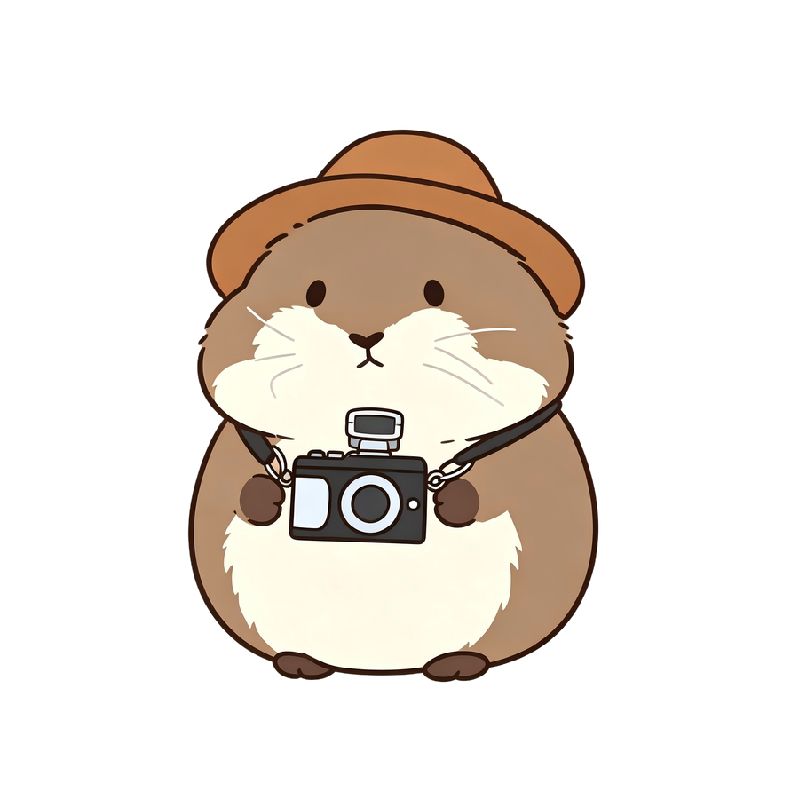
谢谢你，把罐罐从店里带回身边，
又带着它走了这么远的路。
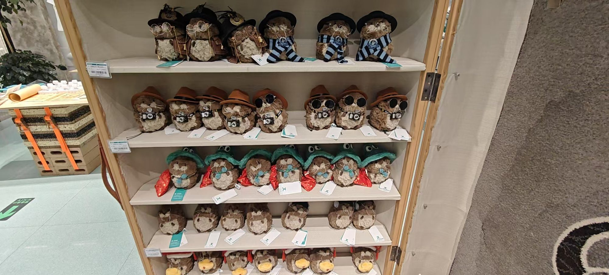
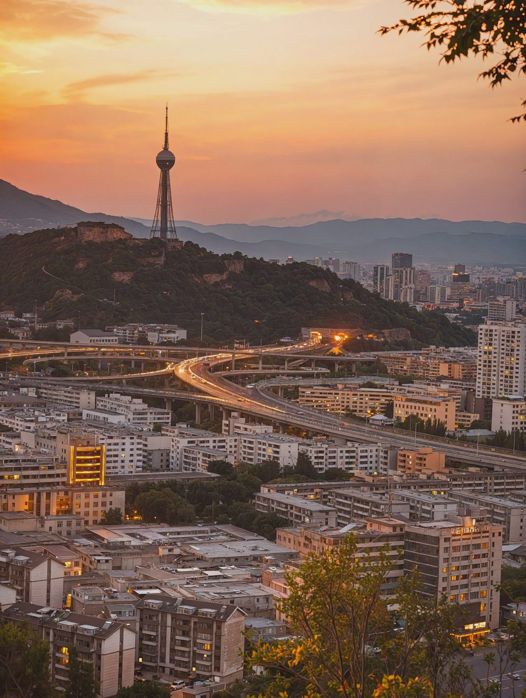
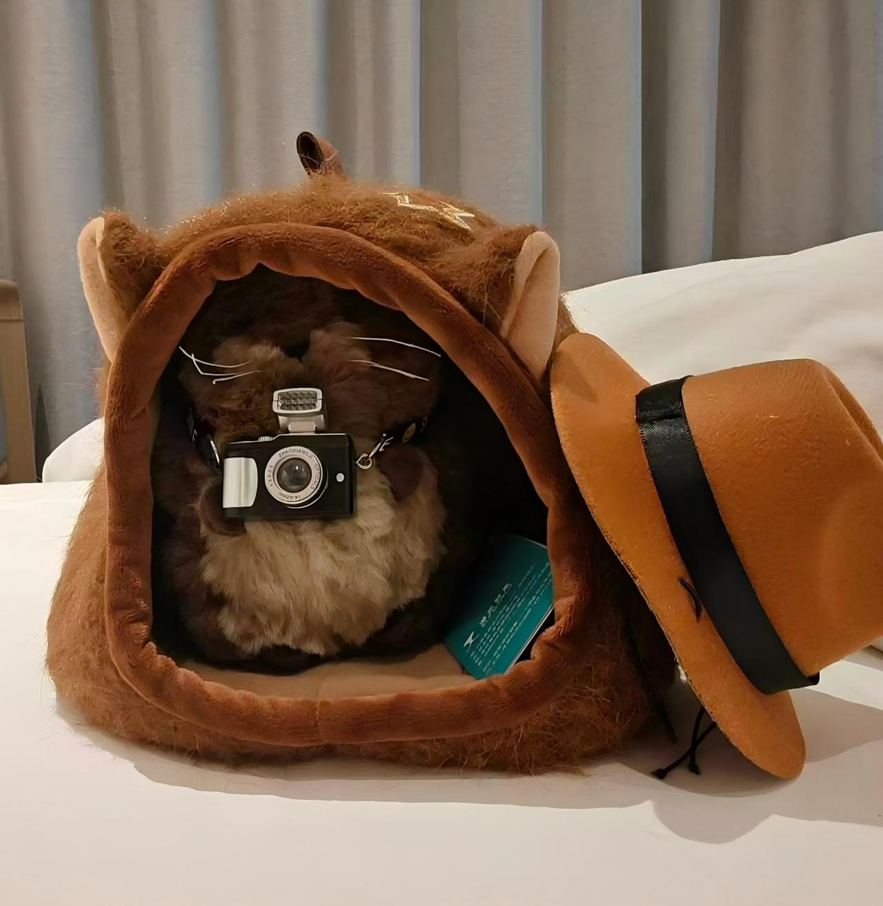
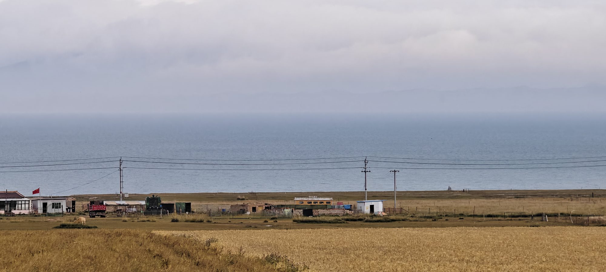
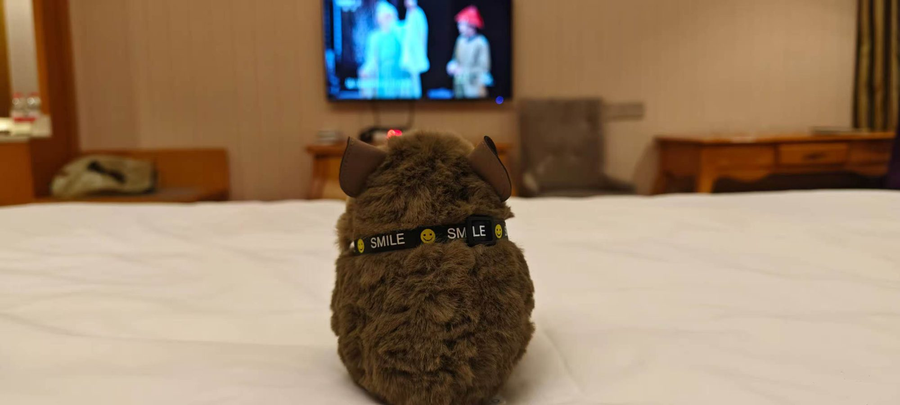
罐罐去了青海湖和茶卡盐湖，但是天气不好，罐罐连出来的机会都没有 (´；ω；`)
但是今天罐罐有了自己的名字，还看了电视！也是幸福的一天！
青海的酸奶很好喝，酸奶装在小罐子里——酸奶吃完了，只剩下一只罐子，于是它叫「罐罐」。(而且它长得也真的很像一只罐子呀)
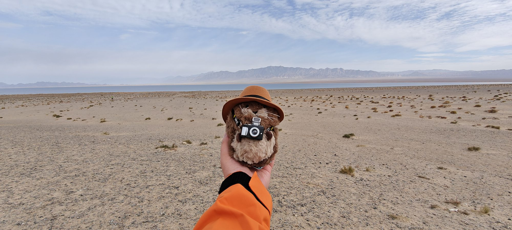
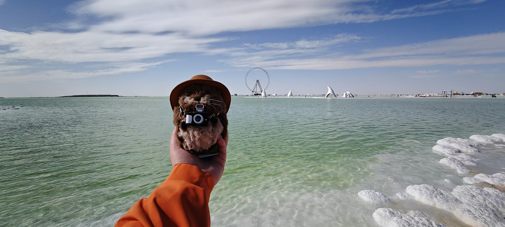
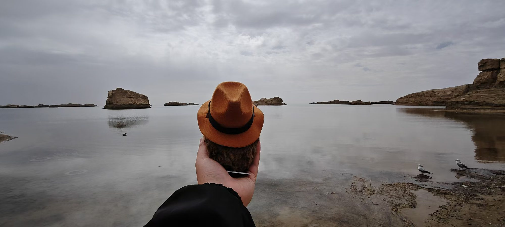
水上雅丹，这天气真不好，罐罐不开心了 😕
⛵水上雅丹世界唯一的水上雅丹 ·“戈壁滩上的千岛湖”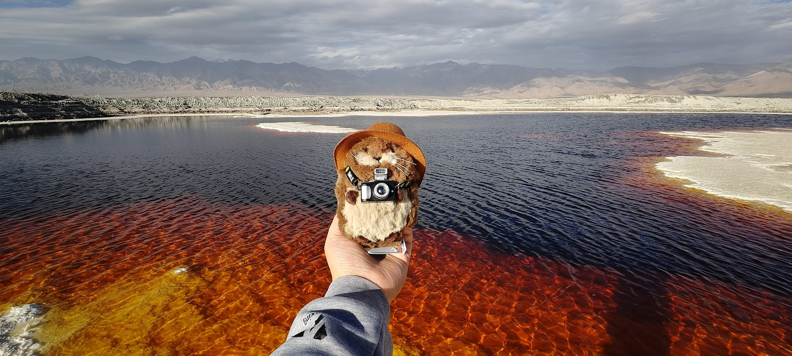
但是下午在翡翠湖里的蜜蜡湖狠狠出片啦！阳光真漂亮，也是替麻麻看了未曾见过的风景了！
💎翡翠湖 · 蜜蜡湖采矿留下的“大地调色盘” · 蜜蜡湖像融化的蜜糖像游戏地图一样！总感觉山后面会冒出个 boss，罐罐有点害怕
🌑黑独山冷湖的黑色山体 ·“地球上最像月球的地方”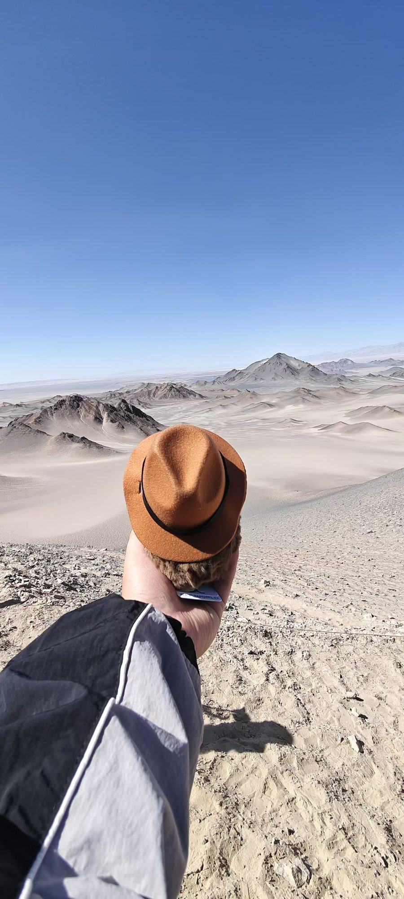
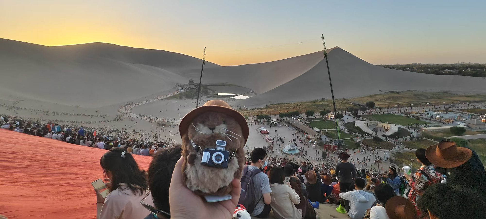
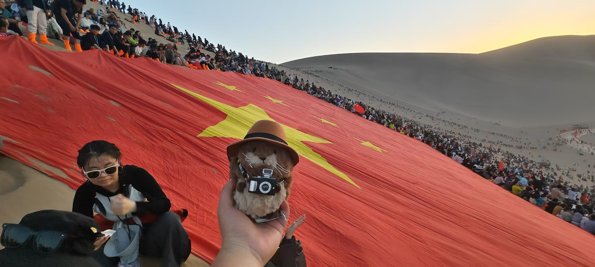
罐罐看了莫高窟，在鸣沙山看了演唱会，真是幸福美满的一天呀！
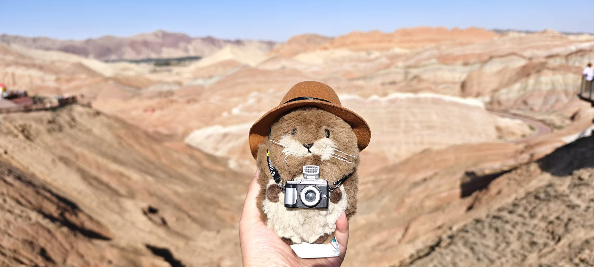
罐罐今天去了张掖，看了七彩丹霞。
好多人！
接下来罐罐要去西安见麻麻了！
to 晨阳：谢谢你~ 这一路上你把我照顾得很好，辛苦啦！我们以后也要经常见面呀~